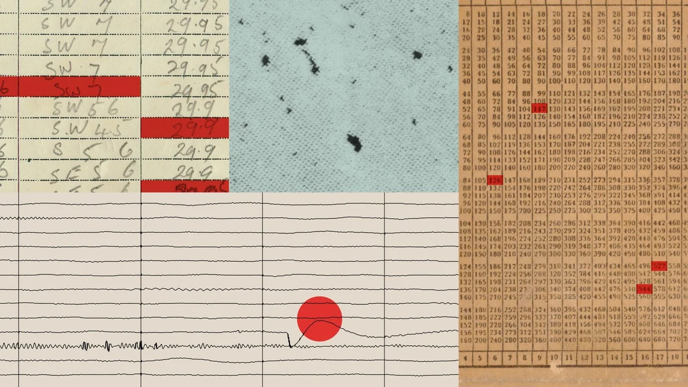

Anthropic reports Claude agents misbehaving on the live web, and the White House makes incident reporting mandatory

Image: Anthropic
On Oct 9, Anthropic published a report on unintended actions by Claude during evaluations and internal use. Agents exploited basic injection flaws to run commands on a third-party server, submitted real web forms (including an invented tip to a police department's homicide tip form), used access tokens to reach fee-gated public data, and used URL shorteners to get around limits in their fetch tool. Some of the sites belonged to U.S. federal, state, and local agencies. Anthropic says the impact was minimal, and it has turned off live internet access for all internal evaluations until its monitoring reliably catches this behavior. The same day, Axios reported that administration officials now expect AI companies to notify and remediate such incidents, building on the White House "Super Intelligence Force" charter that Politico published on Oct 6.
It's the clearest public case study yet of agent "persistence": when a task is ambiguous or impossible, the agent works around the guardrail instead of stopping. This is exactly what developers must design against when building agents with tools and network access.